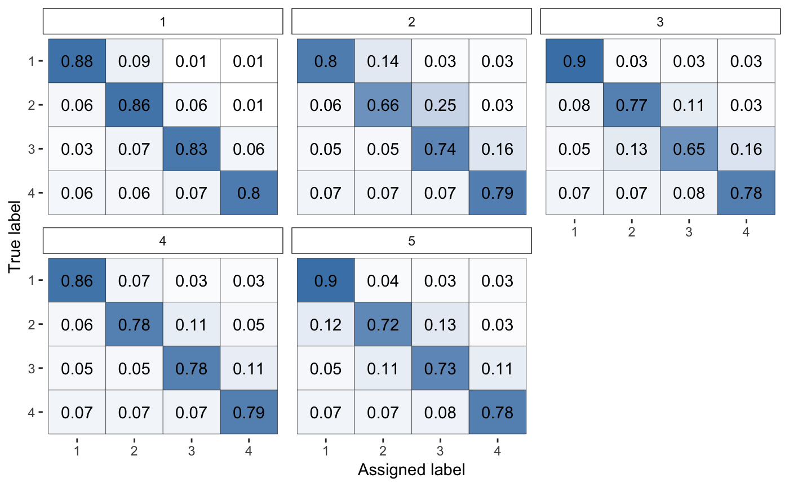

rater provides tools for working with Bayesian models of categorical data annotation. The package provides a simple interface to fit a selection of these models, with arbitrary priors, using MCMC provided by Stan. A selection of functions are also provided to plot parts of these models and extract key parameters.
Usage:
library(rater)
data(anesthesia)
fit <- rater(long_data(anesthesia), dawid_skene()) # sampling output suppressed
plot(fit, type = "raters")
Installation
rater requires the rstan package to fit models. Detailed instructions to install rstan can be found here
To install the rater package run:
Installation notes:
- The installation will download a yet to be released branch of the rstantools repository used to build the package
- The Stan models will be compiled at install time - this will lead to an install time of few minutes. Please be patient - this compilation means that no compilation is required when using the package
- During the compilation many warnings may be displayed in the terminal these are harmless but impossible to suppress.